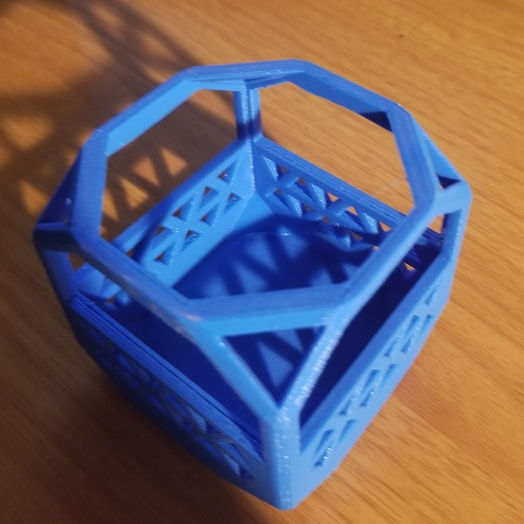

For rotation 5, we worked with diffent types of 3d printing. We mostly focused on additive printing, but there was some focus on subtrative printing. In this rotation, I mixed two models (my face and a pedastal) and made a cube that could not have been subtrativly.
